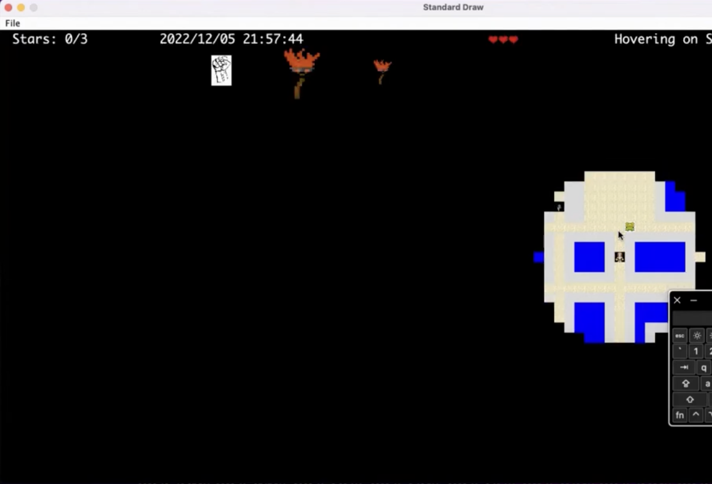

Gameplay
At the start of the game you have three lives, and lose one for each time an enemy encounters you. There are two stars randomly placed in the world, collect both to win. The game also supports save states, which are implemented with serilization and can be loaded in to resume gameplay.

The enemies chase you with a path determined by dikstra's algorithim, which can be toggeled on or off to show the enemies path. Below, it is toggeled on.

Since there is limited vision, I added a merchant, who you can buy up to three "torches" from, you can buy up to three torches which show on the upper left hand cornor.

When a torch is bought and held, it expands your radius view by 2x

You can increase your vision arbitrarily large, doubling the radius each time. However, the larger you expand your viewpoint, the faster the torch burn out, in which case
your view range reverts back to the orginal size and you lose the torch.